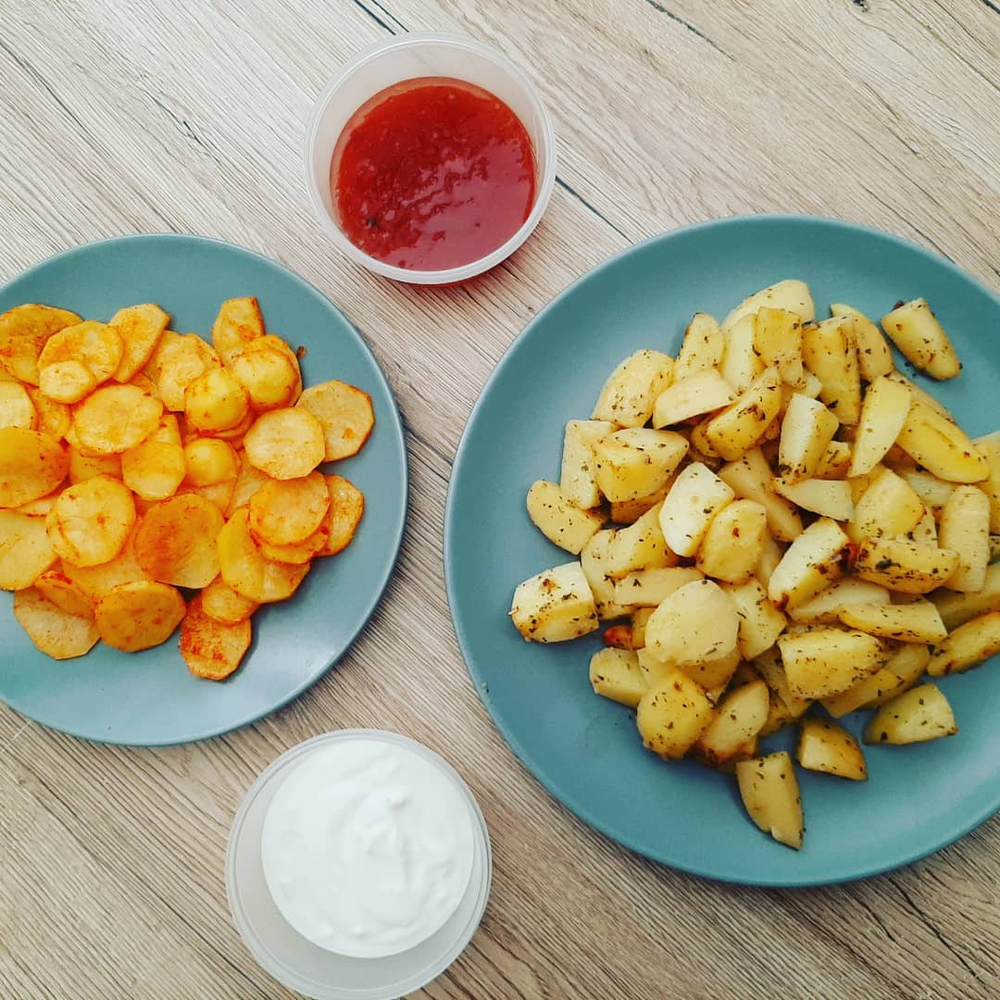

Cesnaková omáčka podľa @keybi_alex — Normy Jedál
Vegetarian Dinner🥔🥔🥔
#potato #chips #garlicsauce #sweetsoursauce #dinner #vegetarian #potatoes #chips #home #food #foodtime #foodoftheday #foodstagram #instafood #dnes_varim #dnesnevarim #dnesjem #dnes_jem #foodporn #homemade #zemiaky #zemiakovecipsy #cesnakovaomacka #sladkokyslaomacka #milujemejedlo